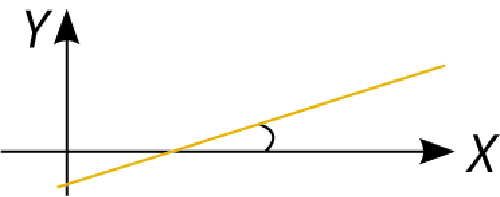
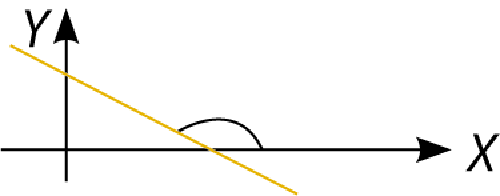
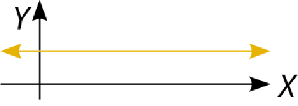
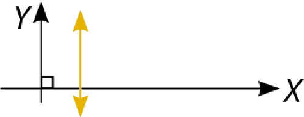
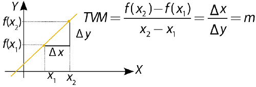
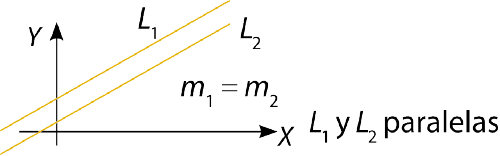
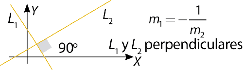
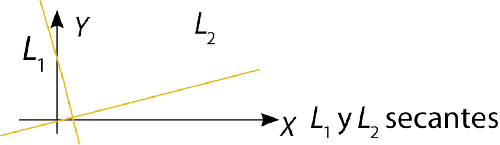
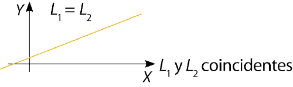

Comprendo para saber
Alumno:
Comprendo para saber
Alumno:
La pendiente de una recta en un sistema de coordenadas cartesianas se define como la razón entre la diferencia de valores en el eje Y y la diferencia de valores en el eje X, para dos puntos diferentes pertenecientes a la recta, así:
El valor de la pendiente coincide con la relación entre las dimensiones del cateto opuesto y el cateto adyacente del triángulo rectángulo que se forma con las líneas verde, roja y naranja.
|
Características de la pendiente |
|
Pendiente |
Ángulo |
Monotonía |
Gráfica |
|
m > 0 |
Agudo |
Creciente |

|
|
m < 0 (Negativa) |
Obtuso |
Decreciente |

|
|
m = 0 |
Llano = 0º |
Constante |

|
|
No definida |
Recto = 90º |
No definida |

|
|
Relación pendiente-TVM: La tasa de variación media TVM se puede expresar como la pendiente entre los dos puntos de coordenadas. |

|
Posición relativa de las rectas
|
Rectas paralelas: Dos o más rectas no verticales son paralelas si y solo si sus pendientes son iguales,m1=m2. |

|
|
Rectas perpendiculares: Dos rectas son perpendiculares si y solo si el producto de las pendientes es –1. |

|
|
Rectas secantes: ¿Dos rectas son secantes si se cortan en un punto, formando un ángulo diferente de 90° y de 180°?  |

|
|
Rectas coincidentes: Dos rectas son coincidentes si todos sus puntos son comunes. Dos rectas coincidentes se determinan cuando los coeficientes de x, de y, y del término independiente b son proporcionales. y = mx+b y ky = kmx+kb , con k ∈ ℝ. |

|